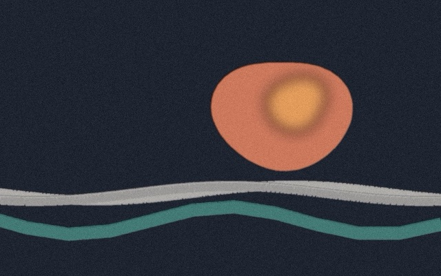
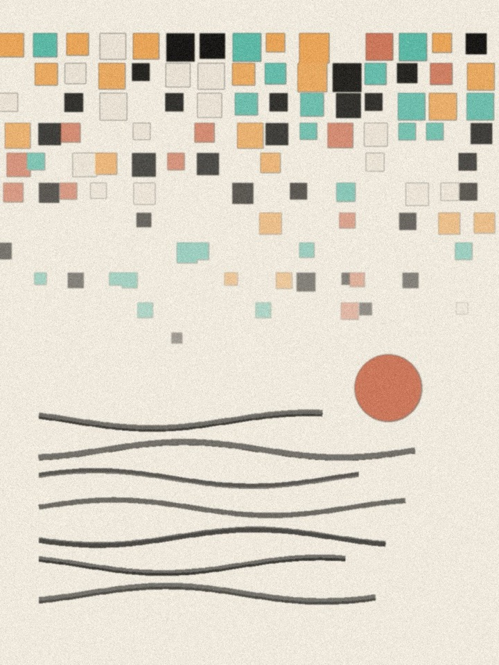
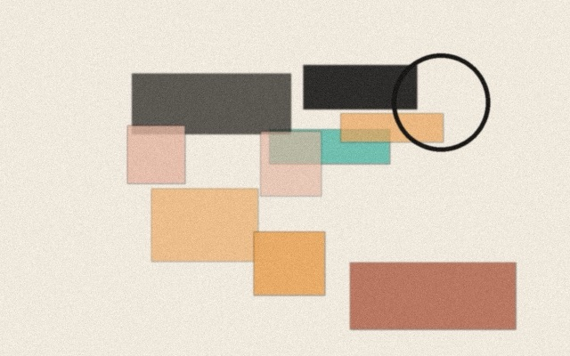
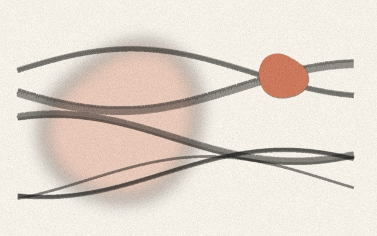
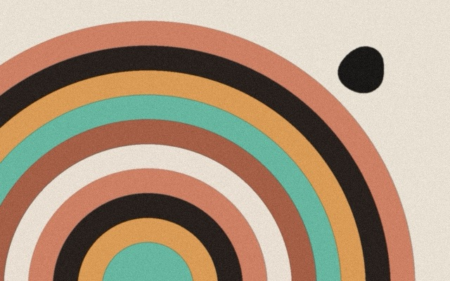
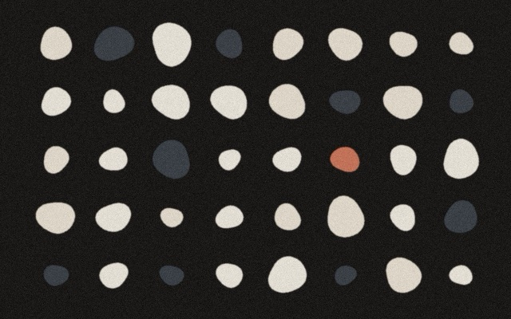
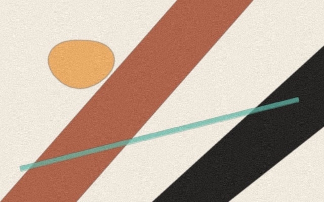

The single greatest skill you can develop
The one skill that compounds across every role, team and stage of a career.
Read on LinkedIn › (opens in a new tab)Writing
Short pieces on design leadership, systems and how teams ship. Most start as LinkedIn posts.

Next up: notes from designing Vivian and Vida.

The one skill that compounds across every role, team and stage of a career.
Read on LinkedIn › (opens in a new tab)
Getting design out of the execution trap and into product strategy.
Read on LinkedIn › (opens in a new tab)
Why most design systems don't scale, and what to do about yours.
Read on LinkedIn › (opens in a new tab)
Moving from presentation mode to collaboration mode changed how my team ships.
Read on LinkedIn › (opens in a new tab)On launching Home Trust's reverse mortgage suite for Canadians 55+.
Read on LinkedIn › (opens in a new tab)
Not every fix needs an A/B test. When expertise should win.
Read on LinkedIn › (opens in a new tab)
Waiting for a design-mature org is a trap. Good designers shift the culture from inside.
Read on LinkedIn › (opens in a new tab)